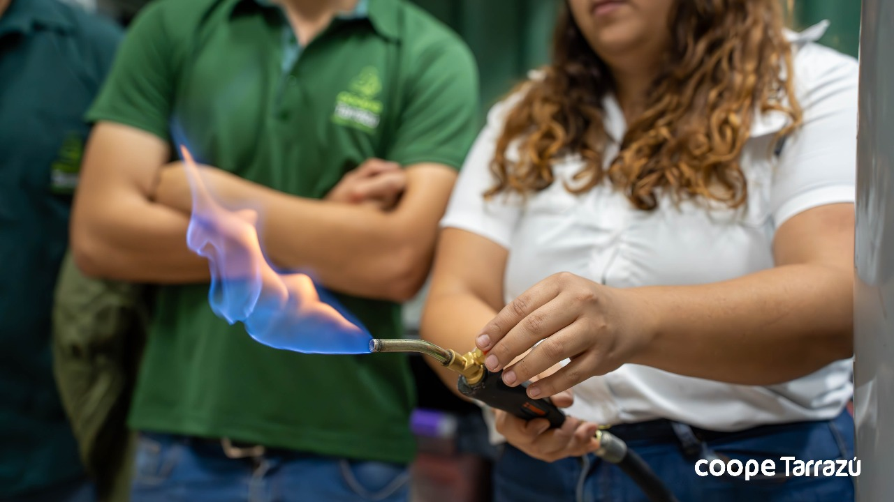
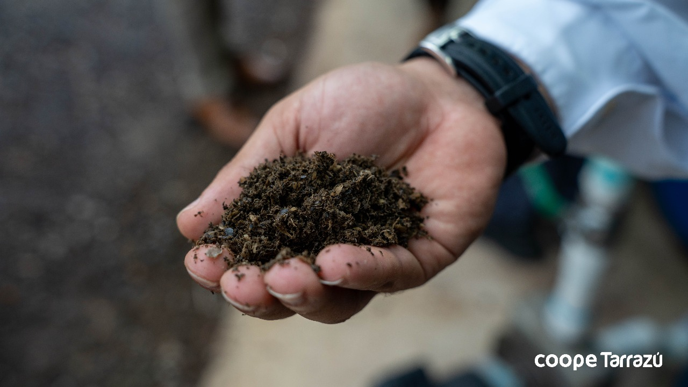

Descripción operativa de planta demostrativa de biogás operada con residuos húmedos de café
Especificaciones del sistema
Tecnología capaz de transformar los residuos húmedos de la producción de café y convertirlos en energía renovable y biofertilizante.
Nivel de Desarrollo Tecnologico: 7 (Prototipo demostrado en codiciones operativas)
Digestión Anaerobia en dos fases los residuos del beneficiado húmedo del café.
Sustratos: Pulpa de Café, Aguas Mieles y Mucílago.
Ubicación de sitio demosrativo: Beneficio El Marquez, CoopeTarrazú, San Marcos de Tarrazú, Costa Rica.
Producción de biofertilizante debido al mejoramiento del digestado sólido y líquido producido del sistema de digestióna anaerobia.
Producción de biogás diaria:
28 m3/díacon una pureza de metano del76% v/v.Patente Presentada:
CR2025-0000326: Método de reciclaje de recursos para residuos de producción de café y su sistema. Por la Universidad de Costa Rica y licenciada a empresa incipiente Microoignis Ltda.


Esta unidad es propiedad y esta siendo operada por CoopeTarrazú, como donación de uno de los productos del proyecto Café Revalorizado desarrollado por el Programa Hélice-UCR y financiado por KOICA. Durante los meses de cosecha de enero a abril del 2025 se realizaron caracterizaciones de los materiales que se obtiene del sistema, a continuación se presentan los promedios de la mása volatil de estos materiales.
| Materiales del Proceso | Promedio de los Sólidos Volátiles (mg/kg) | Desviación Estándar de los Sólidos Volátiles (mg/kg) |
| Alimentación | 23 638 | 11 308 |
| Hidrolizado | 18 826 | 9 949 |
| Fibra | 249 447 | 60 757 |
| Digestado | 7 320 | 9 642 |
| Biosólidos | 7 083 | 8 328 |
| Sobrenadante | 5 324 | 5 807 |
Se observó variación de estos valores alrededor de los meses de medición, debido a la variabilidad natural en el contenido de masa seca volatil que se presentan en estos residuos durante el procesamiento agroindustrial del café. La Figura muestra un gráfico de cajas y violines que muestran la variabilidad de estas mediciones.
A partir de los valores de caracterización obtenidos, es posible estimar el porcentaje de destrucción de la masa seca transformada por el prototipo. Los resultados evidencian una destrucción de masa volátil de 16 310 mgSV L⁻¹, lo que corresponde al 69% del contenido de masa seca volátil que ingresa al sistema.
Resultados Operativos
En la siguiente figura se puede observar la varación temporal del pH durante los meses de operación y monitoreo dado al sistema.

Se observa que el pH_T2, correspondiente al reactor hidrolítico, se mantiene en valores ácidos cercanos a 4, condición esperada y característica de sistemas fermentativos de esta naturaleza. Por su parte, el pH_T4, asociado al digestado generado en el reactor metanogénico, se mantiene cercano a 7, valor óptimo para el desarrollo y actividad de los microorganismos metanogénicos.
Adicionalmente se realizaron mediciones puntuales a muestras de la alimentación (pH_T1) que presentaron pH cercanos al medido en el hidrolizado. Y se realizaron mediciones de pH en el sedimentador del digestado (pH_T5) y en el tanque de almacenamiento de digestado que muestran un pH mayor a las mediciones del digestado (pH_T6).
En la figura siguiente se presentan las lecturas de temperatura interna del reactor hidrolítico (T_T2) y del reactor metanogénico (T_T4).

Durante el periodo de operación se llevó un registro sistemático de la cantidad de residuos procesados por la planta. A continuación, se presentan los totales acumulados de la operación:
Durante esta operación se llevó un registro de la cantidad de residuos procesos por la planta, a continuación se presentan los totales de esta operación:
| Totales | Valor |
|---|---|
| Semanas de Operación | 16 semanas |
| Pulpa de Café procesada | 7,18 t |
| Aguas Mieles procesadas | 26,85 t |
| Producción de biogás | 952,84 m3 |
Con base en la información presentada, se evidencia que el sistema alcanza un nivel de desarrollo tecnológico TRL 7, al contar con un sistema operativo y funcional en condiciones reales de operación. Los resultados permiten validar el concepto de proceso y los sistemas necesarios para la implementación de un esquema de digestión anaerobia en dos fases aplicado a los residuos del beneficiado del café.